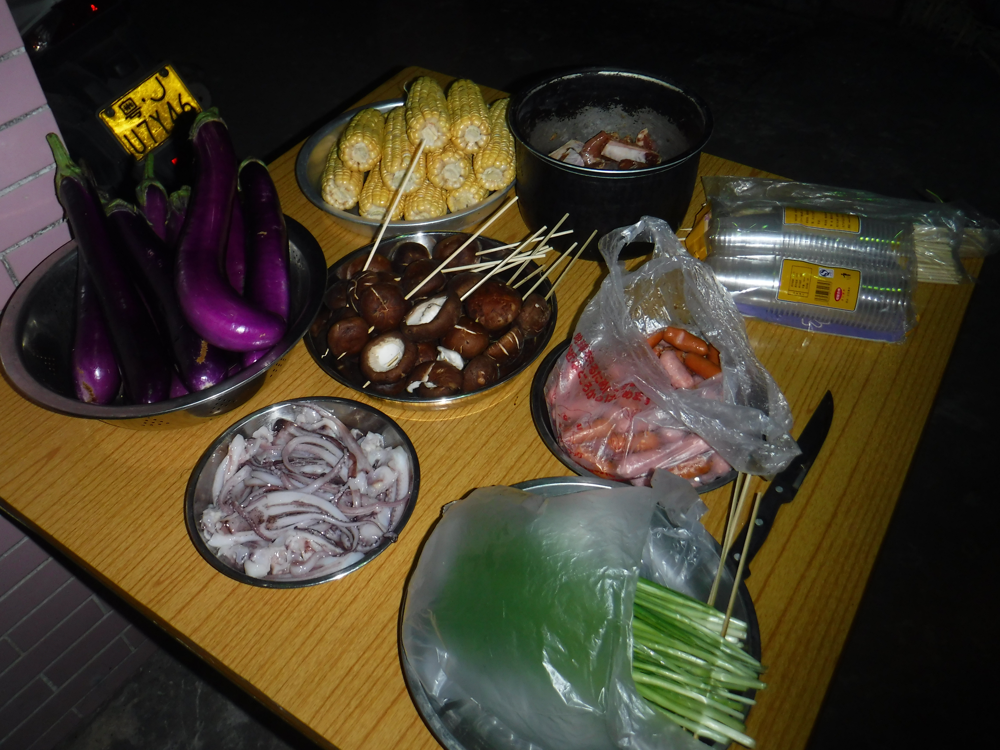

This is part of a Buddist temple monument that we visited in southern China. This was at the top of a mountain, it was quite a hike to get here.

The local people will go to the temple and burn incence, it is meaningful to the religion

This is my son on the left, we had an easter egg hunt in China, as we were there on the holiday.
Just some of the local fresh food we had one night. 
A tribute to Bruce Lee, the statues were fairly common in the Hong Kong area.
Lion dance costumes, from Hung Gar martial arts
Steamed food from a small cafe.

Dinnner time with the Uncles, great food and great company.
An older building, not sure teh timeframe, but it was an interesting sight. This was found in a somewhat rural town, ont a tourist area.
BBQ'ing with the cousins, it was extremly good food.

Thriller Live cast, a tribute to Michael Jackson. This was a show we saw in Maccau, China. Probably one of the best shows I have seen!

An old fashion boat in the Hong Kong port

A McClaren in Hong Kong, illegally parked. It was ticketed seconds later.
The car company is a british company, so the brand is fairly common in Hong Kong based on its history with the British. Click to see about British history in HongKong